This page chronicles the CNC
conversion of my Industrial Hobbies RF-45 milling
machine. It's written blog style, with the newest entries at the top. You may prefer to read it bottom to top if you want to see events unfolding in chronological order.
CNC
Conversion Blog
5/23/10
Limit/Home Switch Noise
I recently got my Home Switches going and decided to go ahead and enable them to act as limit switches too. That's when I became aware of just how much noise there was on the lines. I was getting a gratuitous limit fault from noise about every 2 to 3 minutes. No worries, I did what I should have done to start and grounded the foil inside my cables to the CNC electronics cabinet via their connector. The noise went away immediately and life has been good since.
If you didn't think you had much noise in your system, maybe its because you didn't have a way to check? Ground the cables at the electronics cabinet end (not the machine end, that can create ground loops).
Mach3 Users: Make all of your Accelerations the Same on your Axes!
I discovered this was a problem while making my tapping arms. Due to the high rate of feed (50 IPM) and some abrupt changes of direction to follow the profile, I hadn't really encountered the problem before. I had heard on one individual having an issue with wildly different motor tuning on a knee versus his X and Y axis. It had been said this was a bug in Mach.
In any event, as I discovered early in my machining of the axis arms, it isn't a good idea to have different accelerations on two axes. I wouldn't have noticed it had it not been for easing back the accel on the X axis because it was faulting too much when I run with two 6" vises on the table. I lowered the X axis accel to match the Z and forgot about it. This latest job making a tapping arm reminded me in short order that something needed tending to.
It seems odd to me that Mach3 doesn't account for this, and it ought to be classified as a bug. Mach's trajectory planner should be able to properly choreograph a coordinated move across n-axes with a different acceleration and top velocity on each. If nothing else, the lazy algorithm would simply limit all the coordinated axes to the least acceleration and velocity of any axis involved at the time.
In any event, if you think you're doing yourself a favor by finding each axis's maximum performance envelope, you might in fact be doing the opposite until Mach learns to deal with it better.
BTW, the symptom will be that the tool follows the coordinated move's path in a very sloppy way. Going around the pivot point on the tapping arm swing block it was painfully obvious to the naked eye something was wrong--no calipers or micrometers needed.
The X-Switch with cover off so you can see how it works...
4/11/10
Machine Tuning as Preventative Maintenance
I like to fiddle a bit with my machines every now and again to make sure they're adjusted to tip top condition. The CNC mill seems to benefit from this the most. For example, the gibbs and sometimes the Mach3 motor tuning parameters benefit from periodic adjustment. Perhaps surprisingly, the tuning varies depending on conditions.
When its cold (like it is right now in my area), the mill is stiffer and seems to require lighter settings. When I load the table with two 6" Kurt vises there is enough weight to slow it down too. Right now I have the combination of both, so things are kind of "worst case", at least until I decide to throw a cylinder block up on the table and try to machine on that!
In addition, Z is the most sensitive (being the heaviest), followed by X, followed by Y.
So my current settings, which I regard as a worst case, are as follows:
X 110 IPM, 10 acceleration
Y 120 IPM, 15 acceleration
Z 110 IPM, 10 acceleration
I generally just leave Z right where it is. However, if the weather is warm and the table is lightly loaded, I may bump X up to 120 and 15.
It's concievable things can be made to run faster, but I like to keep my gibs very tight as well. BTW, they sometimes need readjusting too. The original owner of IH, Aaron Moss, once told me he retuned his gibbs every season. I can definitely believe that.
Something else that helps is a machine warmup. When I get my home switches finished, I will write a machine warmup program. The idea is to move the axes through their full range of travel for a period of time, and warm up the spindle bearings as well. This practice is common on full-sized VMC's, and there is no reason it wouldn't be helpful for my little mill too. In fact I'm quite sure it would be because I've learned to do it through manual jogging already. It would be even nicer to have a program run while I pump the oiler every so often to make sure plenty of way oil is being spread over all the surfaces.
5/30/09
Calling it
Done!
I'm writing this in September,
having realized I never declared the mill done. I just got busy making
things with it. As near as I can tell, it was finished sometime in May.
My last work involved trying to get it all dialed
in to be as accurate as possible, one of the last aspects of that
was squaring the column, so I'm going to use that as my reference for
calling the job done.
Squaring
Your Mill Column
I squared my mill column a
few weekends ago as part of an accurizing process I'm going through on
the mill, but I only just took the pix off the camera and processed them
today. I used a cylindrical square to measure how far off I was, leveled
the table, and then shimmed the mill column to take care of the remaining
error until I was just a few tenths off. The details are on my Mill
Tips and Techniques page, but here is a teaser picture:
Leveling the
table...
All right then,
two teaser pix!
Even More
Fun Stuff: Ballscrew Mapping With a DRO
I got my DRO installed on the
X-axis of the mill and was able to do a little mapping action. Full details
on my Mill Tuneup page, but here are
some teaser pix:
Reader head...
Scale mounting
bracket...
DRO control
panel...
The error map
for my X-axis ballscrew...
What can we tell
from that error map?
The left axis
shows the actual move of each commanded 0.5000" move as measured
by the DRO. If the ballscrew
were perfectly accurate, the graph would be a straight line centered on
0.5000".
You can see the
righthand 40% of the ballscrew is qutie a bit more accurate than the left,
although the first maybe 10% on the left is quite good too. Nevertheless,
the whole screw moves to well under a thousandth of accuracy. You can
also see that the errors are not cumulative, but are more periodic. The
total error in 24 inches of motion was 5.6 thousandths and the screws
are advertised as having less than 3 thou per 12", so this screw
is within spec.
Mach 3 has the
ability to take a map like that and correct for these errors. I haven't
tried that yet, but it would be an entertaining experiment!
4/10/09
Getting My
HEDS On Straight...
Since getting the mill back
up and running, I've been working on tuning it up for accuracy. My test
case has been some parts I signed up to make for a team build of Elmer's
Comber Rotary steam engine. I've touched and tuned a lot of different
things, and I'll write up the tuning process at some point as a coherent
page. Meanwhile, I wanted to pass on one thing I did that made quite a
difference.
Mariss
F. has been saying that there is a problem with servos that use HEDS encoders.
These are the usual cheap US Digital encoders, and they're exactly what
I have in my homeshopcnc servos. Some folks have said they had no problem
with their encoders, others have said they have all kinds of problem.
Mariss proposed a fix that involves some simple bypass capacitors, so
I took it on myself to install the capacitors on my servos. Here is what
it takes:
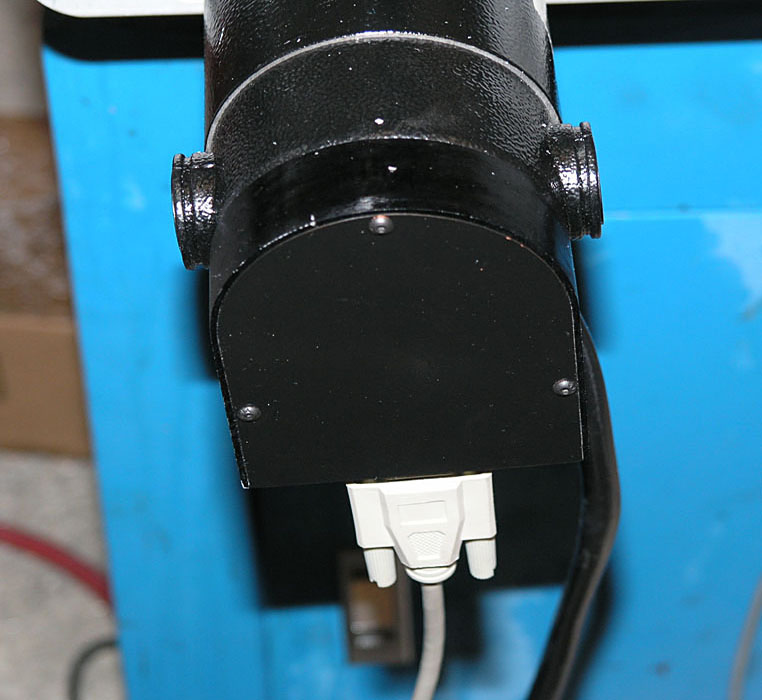
3 Allen-head
bolts hold the rear cover on the servo...
Here's what
the innards look like. The HEDS encoder is connected by a simple little
harness...
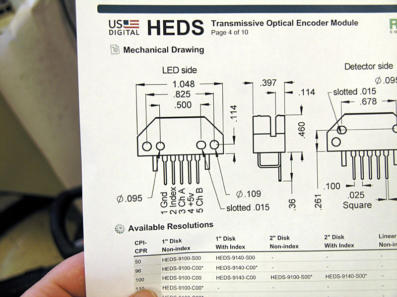
We're bypassing
the power supply to filter out noise, so the capacitor goes between pins
1 (Gnd) and 4 (+5V)...
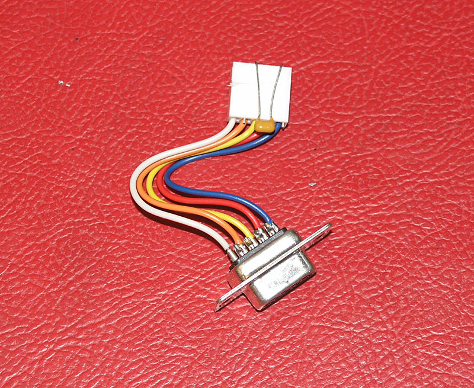
The easiest
thing is just to bend the capacitor leads, insert into the connector,
and then reinstall...
The ceramic 1uF
capacitor goes across the HEDS power supply terminals at the encoder.
Use Digikey BC1151CT-ND capacitors. They cost $1.80 for a package of 10
pieces and Digikey was happy to send them to me without requiring a minimum
order.
The result? I
immediately noticed my servos were quieter when not moving--less dithering.
Some odd glitches and faults that would happen every now and again while
jogging went away. Best of all, my part was suddenly being more accurately
made--I was getting some false feedback from the encoder due to noise.
This is a quick
and easy fix: highly recommended if you have HEDS encoders!
3/18/09
Finally,
the Mill is Back Up and Running!
That power surge was really
painful, but I finally got the mill running again on all 3 axes late last
weekend. Turns out I had blown the Smoothstepper and 2 out of the 3 Geckodrives.
Having gotten the 2 drives
and Smoothstepper replaced, the worst part was just figuring out what
was wrong. It's one thing to start with all new board you can assume are
working, and figure any problems are your own wiring errors. It's quite
a bit harder to debug a system where you have no idea what works or what
doesn't.
Having gotten the axes nominally
going, my next task was to tune each axis. Servos have to be tuned. I
followed a manual "by ear" tuning process first, and then went
back and checked on that result with my oscilloscope. Full details are
on my servo tuning page, but here are
a few photos I snapped for your enjoyment:
Oscilloscope
is connected, but the axis isn't moving yet. I also haven't set everything
up or you wouldn't see that trace without a moving axis!
I use the circle
pocket wizard's g-code for servo tuning. Set a small diameter circle and
a relatively high feed rate and you'll get lots of direction reversals
to use for tuning...
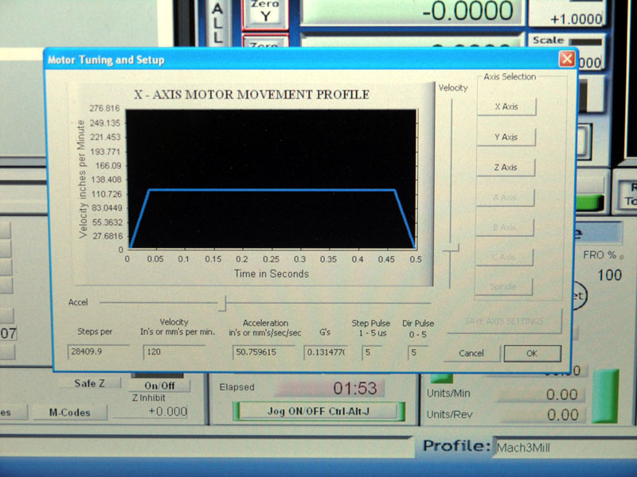
I got my mill
X and Y axes up to 50 in/sec/sec or 0.13g's acceleration with the o-scope.
Without it, I could only get to maybe 40'ish by ear. Z has the heavy mill
head, so about half this much acceleration is available...
The X-axis right
after o-scope tuning. Full clockwise current, nearly full gain, a little
bit less damping. Your tuning settings will definitely be something different!
I did not get
a chance yet to see what kind of rapids are possible. My tuning was focused
on acceleration as it is a more difficult (and many advise more useful)
performance characteristic to optimize. I was pretty happy with the results,
but I intend to "detune" (back off slightly) in order to provide
a margin for error.
2/22/09
Tough Week
for CNC Electronics: Smoothstepper Lost to Storm
Man, it has been a tough
week. I wanted to do some more chip cutting this weekend. Seems we had
a big storm and it blew the power all over town. I didn't think much
of it, and I was not even running the CNC machine at the time. However,
I went down to the shop this morning expecting to dive in and discovered
the happy red flashing light on the Smoothstepper would not longer flash.
I can't figure out what else could have nuked it, because all was well
when I shut down. Looks like I should have unplugged the unit entirely
for the storm.
I have a new Smoothstepper
on order. Man, these little electronics failures are not cheap!
Being desperate to do some
work in the shop, but not having the working mill, I decided to mount
the VFD in its NEMA enclosure:
I'll be wanting
to control the spindle via Mach3 soon, and I'll also want to mount my
more powerful and faster motor, so this was a good move. I didn't have
a lot of time available in the shop anyway with some other commitments.
2/17/09
Blew Up
a Geckodrive
I started out tonight after
work to make some more chips. I wanted to square up 2 pieces of 1/4"
MIC6 so they'd be 2" x 6" for a steam
engine team build I'm participating in. I discovered the Z was faulting
off and on so I decided to crank up the tuning on all 3 axes. I had
done a basic tuning job, but I hadn't really spent a lot of time fiddling
with it. The mill head is very heavy, so I wanted to be sure it was
really tuned up well to stop the faulting. I knew I had a tuning problem
because it was only faulting when I wanted to raise the head, and then
only when I did so rapidly. I turned down the acceleration a bit, and
that was happier, but I'd still get a fault every now and then.
So, I decided to redo the
servos. I got out my screwdriver and started tuning. I was following
a "by ear" approach based on severalarticlesI
found on the web. In general, I did the following:
1. Start with gain and damping
turned all the way down.
2. Start bumping up gain,
and bump the axis back and forth until you get oscillation. You'll know
when you get it, it can be pretty strong.
3. Increase the damping until
the oscillation goes away and the servo is quiet. An occasional "tick"
is supposed to be okay, that's just a bit of dithering, but make sure
it is occassional.
This procedure was actually
not all that hard, and before long I was ready to start machining again,
or so I thought.
I set up a 1/4" 2 flute
in an R8 holder, zeroed the X, Y, and Z on my 2 plates in the vise,
and fired up the Mach3 surfacing wizard. It came back with some g-code
it said would take about 12 minutes so I cut it loose, and sat back
to watch. It seemed to be running along fine, but about 10 minutes into
it, I got up off my stool and decided to go try to listen closely to
each servo motor. I checked the Y, and it was good, but when I got to
the X something looked odd. It sounded fine (hard to hear it clearly
over the noise of the cutter), but the print on the timing belt looked
slightly fuzzy. I decided I was seeing some oscillation and headed back
to the controls to shut down. Before I could get there, poof! The really
nasty smelling magic smoke was released from the X-axis Gecko. It had
been oscillation and it had burnt up the servodrive.
Doh!
I shut down, went upstairs,
and ordered 2 new Gecko 320's via 2nd day air. I was determined to make
some real chips this coming weekend!
Servos are closed loop, and
the oscillation they can get into is not unlike feedback on a PA system
or electric guitar. Left unchecked, it can cause problems. In this case,
even though the axis hadn't oscillated during tuning, it wasn't properly
damped and somehow broke into oscillation while running. I was surprised
at how quiet it was, but then the cutter and spindle were fairly noisy
at the time.
Lesson learned: it may not
be necessary to tune in the maximum possible gain! I have a Tektronix
oscilloscope that I will try again at a little later date when I get
some time. Meanwhile, I will manually tune a bit less aggressively.
2/15/09
Cut First
Chips Under CNC Control!
Towards the end of this weekend
I got the machine all back together and was able to cut my first chips
under CNC control. Exciting stuff!
I spent quite a lot of time
on what appears to be a dead motor. I took it apart and tested the capacitors.
Looked like a bad starting cap. So I found another starting cap and
tried that. Still nothing but a buzz when I flicked it on. At that point
I was too eager to get going, so I just swapped the motor off the manual
mill onto the CNC mill. Nice to have that extra mill!
I spent a little bit of time
calibrating the Z-axis travel (I had already gotten X and Y calibrated
earlier) using a 1-2-3 block and my Z-axis touchsetter:
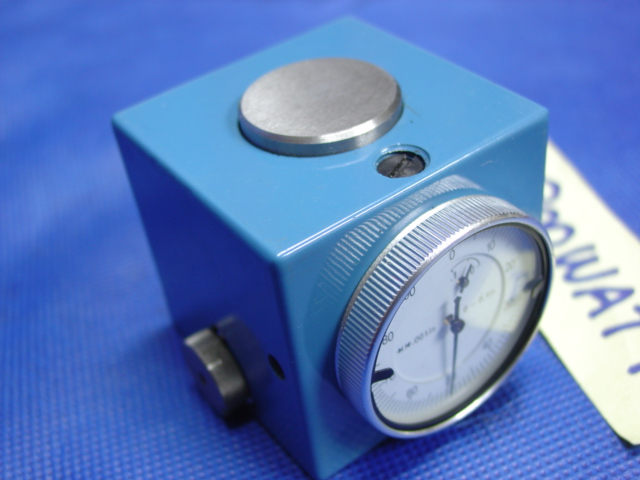
Z-Axis Presetter:
When the needle is on zero the cutter is exactly 2.500" above whatever
the presetter is sitting on. Yep, I got it from 800watt on eBay...
There is the
mill in all its glory. Sun is setting Sunday night, so we need to get
this show on the road!
I also tried
a "touch off" with paper between the 1-2-3 block and the cutter.
I like the Z-axis presetter better...
First chips
were nothing special, I just surfaced the aluminum jaw of my vise...
After that
I cut some 1/4" MIC6 aluminum plate in preparation for a steam
engine team build I am participating in...
Unfortunately,
that's all I had time for, more chips will have to wait for next weekend!
2/9/09
Dinked
Around Modifying the Spindle Mounting Bolts
I spent about 40 minutes
in the shop dinking around with the square head bolts I got from McMaster
Carr. I ordered 3 3" long 5/8" 11 TPI square head bolts. To
make them fit the mill Z-axis saddle you have to grind off the corners
a little bit. 3" bolts are also a tad too long. With the bolts
in the saddle I measure that I needed to shorten the bolts about 5/8"
for a comfortable clearance. That would mean that 2 1/2" bolts
might have worked out okay.
2/8/09
Calibrating
My Axis Steps per Inch and Checking the Backlash on the Mill
I had an electrician come
by, so I now have 220 for the mill (and a big compressor and a few extra
outlets for other things). The next logical step is to mount the spindle
head, but i'm stuck until I get some parts I ordered from McMaster-Carr.
I need the square head bolts needed to secure the spindle to the Z-axis.
They got misplaced somehow from the box of parts that came with the
mill. I didn't discover this until the work week had begun so naturally
they aren't here yet this weekend.
So, I was casting about for
something else to do on the mill in the meanwhile, and I decide to calibrate
the X and Y axis. This is not too hard to do and makes a big difference
for the accuracy of the mill. Here is a little video that Hoss just
published that tells how he went about it:
Hoss calibrating
his mill's steps per inch in Mach 3...
I followed a
pretty similar procedure. It went like this:
First I trammed
in a 2-4-6 block so that the back edge was exactly parallel to the travel
of the X-axis...
Here I am
picking up the starting point. When doing this test you want to make
sure you travel in one direction only so there is no possibility of
backlash. If you change directions accidently, you have to start over.
I jogged slowly up to the indicator until the needle registered about
half a turn, then I zeroed the indicator...
Then I jogged,
being careful to move entirely in one direction until the indicator
registered zero against the 1-2-3 block I'm using as a back stop. In
Mach3 you can job in thousandths or tenths. Try that with your handwheels!
Now read the
distance off the Mach3 X-axis DRO and compare it to the actual length
of your 2-4-6 block. Mine turned out to be 6.0014" long. The X
distance travelled was 5.9653" according to the DRO. The difference
between the two tells me how much I need to increase my steps per inch
with a simple ratio calculation. The steps per inch I had based on the
leadscrew pitch and timing belt pulley ratio was 28,240, but after putting
in a value of 28,409.9 and trying again it came out exactly right!
Here I am
tramming in to do the same thing on the Y-axis. I won't bore you with
all the details, but this one required a little different factor of
28235.8 steps per inch. Note that in theory X and Y should have been
identical. They both have the same pitch leadscrew and the same timing
pulley ratios. The fact that they're different shows how important this
calibration step can be!
Next I measured
my backlash on both axes. This is easy. Job up to the 1-2-3 block until
the indicator ticks. Zero the indicator and the DRO for that axis. Back
off an inch and then jog back in until the indicator zeros. Whatever
the DRO reads is you backlash.
I got 0.0003"
for the Y-axis and 0.0006" for the X-axis. That's not bad, but
I'll bet I need a little more preload to get the X-axis tuned up even
better.
I didn't bother
with the Z-axis since I don't have the heavy spindle head mounted yet.
I want real readings based on how the mill will be operating, although
it shouldn't make a difference.
2/1/09
Newsflash:
All Three Axes Are Running!
I made an adapter
for the servo shaft and got the Z-axis running today. Minor tuning
was needed, but the Z runs pretty smoothly.
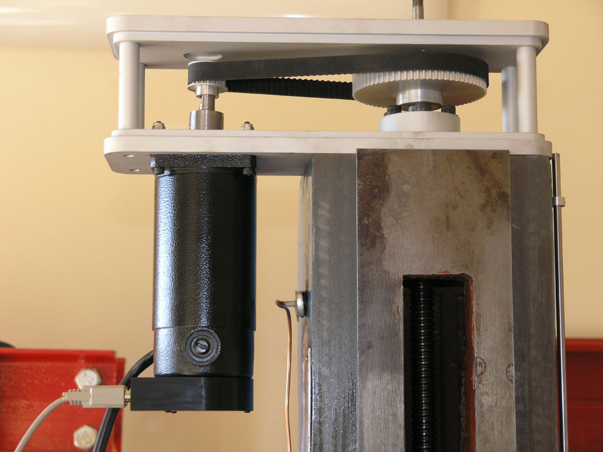
Not a lot left
to be cutting chips:
- Mount the mill spindle head.
- Get 220V over to it (easier
said than done!).
- Tune the servos for real.
- Get out the dial indicators
and get everything calibrates: steps per inch, backlash, squaring
the mill, etc.
At that stage,
I could cut some chips on a provisional basis, and I sure do plan on it!
1/31/09
X and Y Axis
are Alive! Plus, New Servo Page
Between the wee hours Friday
night and the morning today I've gotten the X and Y axis servos mounted
and running. The servos are really not tuned yet, but even in their rough
state I was able to move the table at 180 IPM! I am not suggesting that
is something that will be accurate or even usable, it was just play, but
it was fun! I tried for 200 IPM, but the servos started faulting again
and I didn't want to spend too much time tuning for a scenario that isn't
real anyway.
Meanwhile, I added a
new page that gathers up all the stuff I had to do to adapt the HomeshopCNC
servos to the IH Mill CNC Kit.
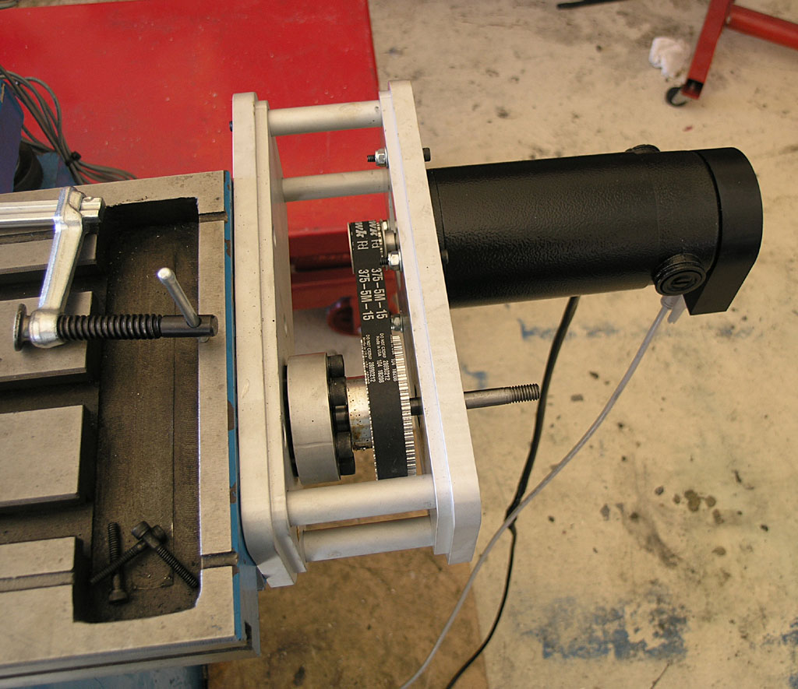
My next problem
is to adapt the servo for the Z-axis, which is going to require a little
stronger medicine:
I love the performance
of the HomeshopCNC servos, but the shafts are really short for this IH
kit!
1/30/09
Mounting
Timing Pulleys on the Servo
I'm going to use 1/8"
roll pins to mount the timing pulleys to the servos. This is the method
Gene told me is used by Industrial Hobbies on their turnkey systems, and
it will provide a very solid mounting--much more so than a couple of set
screws.
Here is where the hole needs
to go on the X and Y axes when the timing pulley is oriented properly
to mesh up with the pulley on the ballscrew:
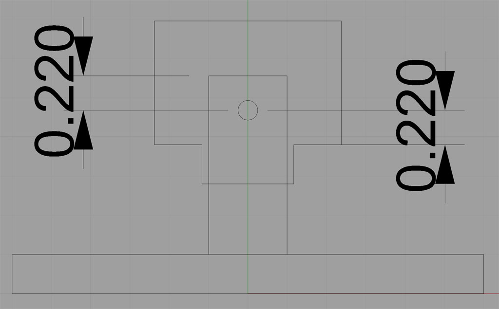
I can use the
shoulder of the pulley and the end of the motor shaft as my datum reference
points. I need an identical offset of 0.220" from either point to
locate the hole in the shaft and the pulley.
1/29/09
Before I
Forget: IH Limit Switch Wiring
I spent an hour and a half
tracking this down just now on
CNCZone. Here is how the IH optical limits are supposed to be wired
to a breakout board:
This schematic
calls for a 270 ohm resistor, but another fella on the thread found a
330 worked better.
1/25/09
Lots of Fabrication,
Wiring, Testing, and Diagnosing Went on This Weekend. Result? 3 Servos
a-Spinning!
My goal for this weekend was
to have the enclosure mounted on the rolling tool cabinet and be able
to spin all three servo motors. Easier said than done!
Mounting the enclosure was
pretty easy, as was installing the electronics and axis modules. Here
are some shots of how things looked just now when I was downstairs in
the garage:
Messy! It sure
is nice that I can use a laptop with the Smoothstepepr...
Very messy wiring.
After I get everything working, I'll be milling new panels (using this
CNC mill of course) and I'll take that opportunity to build some real
wiring harnesses that clean this up!
The wiring is
pretty messy, but I'll be rejiggering it to make some real wiring harnesses
and clean it up on a future pass. Right now I just want to make it work.
Most of my difficulties have been with the C17 card and getting it to
reliably deal with servo faults. I haven't yet decided whether the board
is flaky, or whether I'm just using it wrong. I do know I have seen it
do some pretty odd things. When I got everything into this cabinet, for
example, it completely quit closing the relay during the startup sequence.
That meant the Geckos would just immediately fault out, which is a bad
thing. If you read my diagnosis page, you'll see I keep having this problem
over and over. Each time the fix is a little different. This time I got
things going again by connecting the switched side of the Start button
to the DC supply relay. That ensures it gets closed during the Start cycle
regardless of what the C17 chooses to do. As is usual for me, I didn't
think of this solution until after I'd slept overnight from a frustrating
earlier session.
Now I've got all
3 servos spinning. X tends to fault out, but that's just because I don't
have the servos in a very good state of tune. There's liittle point in
it until I can get them mounted on the machine anyway because they'll
just need returning. Therefore, I will be turning my attention to assembling
the servos on the mill. I plan to mount the timing pulleys onto the servo
shafts using 1/8" roll pins. This is how IH does it on their turnkey
systems and it'll be a lot more solid than trying to use setscrews on
the powerful motors I've got. Towards that end, I was researching the
proper hole sizes to drill and came across a page from SDP-SI on it here.
It's been a busy,
but fruitfull weekend!
1/12/09
Axis Modules
Are Done Pending 2 Cables
All three axis modules are
now assembled and tested. As I was finalizing the last of the three modules,
I decided I wanted a quick disconnect on the signal wires, so I made up
a cable out of a male and female DB9, and that looks like it will work
well. I just need to make 2 more of those cables for use with the other
2 axis modules.
Here is what a finished module
looks like with the quick disconnect:
To install an
axis module in the enclosure requires 2 connections--the quick connect
is all the signal level stuff, and then there are the main DC power supply
+ and - that go to bus bars. It should be pretty quick and easy to install
one or switch one with another to clear up some issue. I could've skipped
the quick connect, but I got to thinking about poking and prodding inside
that enclosure on my hands and knees and wanted to make it easier.
What's next?
1. I need to finish
making the other 2 quick connect cables. That'll be easy to do during
the week, I hope.
2. I need to clean
up the enclosure itself, get it mounted on the side of the rolling chest,
and get the electronics mounted inside and tested.
3. Last step is
I need to install the servos on the mill and then see the axes move.
We're getting
closer!
1/3/09
Major Milestone:
Spinning a Servo! (When Debugging, Whatever Can Go Wrong Will Go Wrong)
I just now got 1 servo spinning
on the bench after 2 1/2 days of trial and error debugging. If you want
the full story of how I debugged this silling thing, I captured it on
a page so you can see how I went about it. It's a painful process
as not all of the relevant information you will need is captured in one
single place. Some of it was out there, but a lot of it I just had to
figure out on my own.
Here is a concise list of all
the things I had to change from my original attempt to run:
Set CNC4PC Master Control
Board DIP switches for G320. It acts funny on the other board types
whether or not Err/Res is connected.
Discovered I had mislabeled
the leads from my front panel for the "Start" and "E-stop",
so they were connected backwards.
Reverse the motor connections
because they were backwards compared to what the encoder indicated,
causing an immediate servo fault.
In doing #3, I reversed
the wrong leads and had to replace the power supply rectifier. I don't
think I blew the Gecko, amazingly!
Connect a 47K ohm resistor
across pins 1 and 3 of the G320 to ensure the bridge initializes properly.
This was buried in a hard to find Mariss note on CNCZone.
Now I was getting the servo
to hold position, so I played with the tuning trimpots a bit.
In Mach3, set Step/Dir to
ActiveLo. Set pulse width to 5 (the pulse width may be ignored for Smoothstepper).
Connect "Common"
on G320 to +5V on breakout card instead of Ground. Another one that's
easy to miss unless you read a lot of posts on various boards!
Set up the proper motor
tuning parameters on Mach3. IH says 115 IPM speed and 0.15g of acceleration,
according to another post I found. I also needed 28,240 steps to move
1".
Set the Smoothstepper jumpers
to actually provide +5V to the breakout board. Otherwise, the terminals
marked "+5V" are 0V!
Now I can spin the servo this
way and that with Mach3. It can still fault if I rapidly change directions
at full jog, but that's just tuning and I need to set it properly on the
actual machine instead of with servos flopping around on the floor.
I must admit that per the discussion
on the Cookbook Blog on the Eternal Servo vs Stepper Jihad, it was a lot
harder to spin a servo than a stepper. In general, I encountered a lot
of less than obvious things including the CNC4PC DIP switch settings,
need for the 47K ohm resistor (that's going to be built into the next
generation Gecko servo drives), and bizarre experiences with "Common",
which has to be +5V, and which didn't get +5V until the Smoothstepper
jumpers were enabled.
Here are some photos of my
CNC electronics testing lab on the dining room table (my wife is glad
it seems to be working and I'm cursing a lot less!):
Figuring
Out Mach 3 Parameters for My Servos
I have 500 CPR encoders on
my servos, which means 500 x 4 = 2000 steps per motor revolution. It takes
5 (leadscrew pitch) * 2.824 (timing belt ratio) rotations to move the
X or Y axes 1". So, I need 2000 * 5 * 2.824 = 28,240 steps per inch
of axis motion. IH runs at 100 IPM, so I'll set this maximum speed initially.
12/27/08
Wiring Continues,
and Powder Coat is On Order
I have been busily making cables
and wiring up the enclosure. There are a lot of connections here! I have
my wiring diagram and I am coloring in each connection as I finish making
it. Everything is point to point, so I am making little wiring harnesses
and trying to keep it neat.
At the moment I'm just trying
to get to the point where I can make one axis module active and spin a
single servo motor. If that all works, I will assemble and test the other
2 axis modules. After that it will be time to finish up the enclosure.
I got a neat powder coating kit from my brother for Christmas, and I just
ordered some Ocean Blue powder coat from Caswell Plating. I think the
Ocean Blue will match the IH mill blue pretty good. Powder coat is very
durable. Not really necessary for this application, but I thought it would
be fun to try it out!
12/21/08
Progress:
Wiring Diagram, Board Mounting, et al
You can be forgiven if you
don't think I've been doing anything for 3 weeks. Reallity is I've actually
been pretty busy. It takes a ridiculous amount of research to figure out
how to wire up one of these CNC projects right, so that's a big part of
what I've been doing. Ordering various ancillary parts and mounting my
various little sub-circuit boards to a big mounting plate that goes in
the enclosure would be the other part. Today I got started wiring up.
I want to do just enough wiring to verify I can spin one servo sitting
on the bench before I do too much else.
Compare this
to the diagram directly below. Notice I am reversed. That's intentional,
I decided to mount the NEMA enclosure on the side of the rolling cabinet
that will be closest to the mill...
12/2/08
Getting Geared
Up to Wire the Box
I've been getting in a plethora
of odds and ends to start wiring up the enclosure. I've now got everything
except a relay I will use for the E-stop circuit and the master AC on/off
switch for the front panel. I also did a number of versions of the overall
schematic. The latest is on the enclosure
page. Based on my latest schematics, I've done a layout for how I'll
go about mounting the various sub-boards in the enclosure:
My goal this weekend
would be to get the enclosure to the point I can actually mount the boards
and begin the wiring process next weekend, and hopefully try spinning
some servos (though not on the machine) next weekend as well. There's
quite a bit of work to do there, but if I get enough hours I should reach
that stage. Fingers crossed!
I still need to
make an arm to support the keyboard and monitor, I need to mount the enclosure
to the rolling cabinet, and I also need to paint it.
There's still
a lot of fussing. I haven't spec'd or ordered any of the auxilliary panel
connectors, for example. I have some sitting around the parts bin that
will hopefully work. Have to look at them as well. If need be, I can delay
VFD and coolant wiring until after the servos are running and it would
be no big deal.
11/23/08
New VFD &
Spindle Control Page
After spending a couple of
hours last night and this morning studying my VFD and controller board,
I wanted to start a new page for the VFD work. The work required to control
the mill spindle from Mach3 is not terribly hard, but there are a lot
of details, so I've split it off to a different
page to make it easier to follow this subsystem.
11/22/08
2 Hours of
Progress this Morning
Two hours this morning, and
while I did a lot of different things, it doesn't feel like all that much
progress. Doh!
I started out with my new treppaning
hole cutter from SPI. I've had so much trouble make large holes in metal
sheet over the years I finally sprung for a professional tool. I started
out trying to finish the meter hole on the 3rd axis module. Things got
off to a good start and then got progressively worse until the little
tool snapped clean off! Fer cryin' out loud!
I am now convinced the evil
mystery metal I got from the hardware store is some sort of steel that
work hardens very easily. I can find no other explanation for how difficult
it is to work with. In any event, before it broke the cutter almost got
through, so I knocked the disk out with a ball peen hammer. I need to
clean up part of the hole with an abrasive grinder of some sort, but it'll
be fine.
I turned from that to mounting
the Antek power supply in the enclosure box. That was no big deal: set
supply in position, mark holes, drill holes, done! So that's ready to
go when it's time. I'll leave the supply out of the box for the time being
because there is still more cutting and drilling to do there.
Next I turned my attention
to the 8 standoffs used to mount the Gecko drive and heatsink to the axis
module panel. These 8 had not yet had holes drilled and tapped in either
end. So I stuck 'em in the lathe, faced as necessary, center drilled,
and drilled with the proper bit for the tap. When all 8 were done, I went
over to the mill and power tapped each hole with a spiral flute tap.
That's two hours of my morning
and now it's lunch time. Nothing worth taking a picture of even.
11/15/08
Got Most
of the Cutouts in the NEMA Enclosure
I will still need holes for
the cooling fan, but I want to make sure I understand the clearances and
location of everything else before I try to position the fan. My current
thinking is to put it in the door next to the hinge and up high to exhaust
the warm air. Wish I had a louver punch!
Here are some piccys:
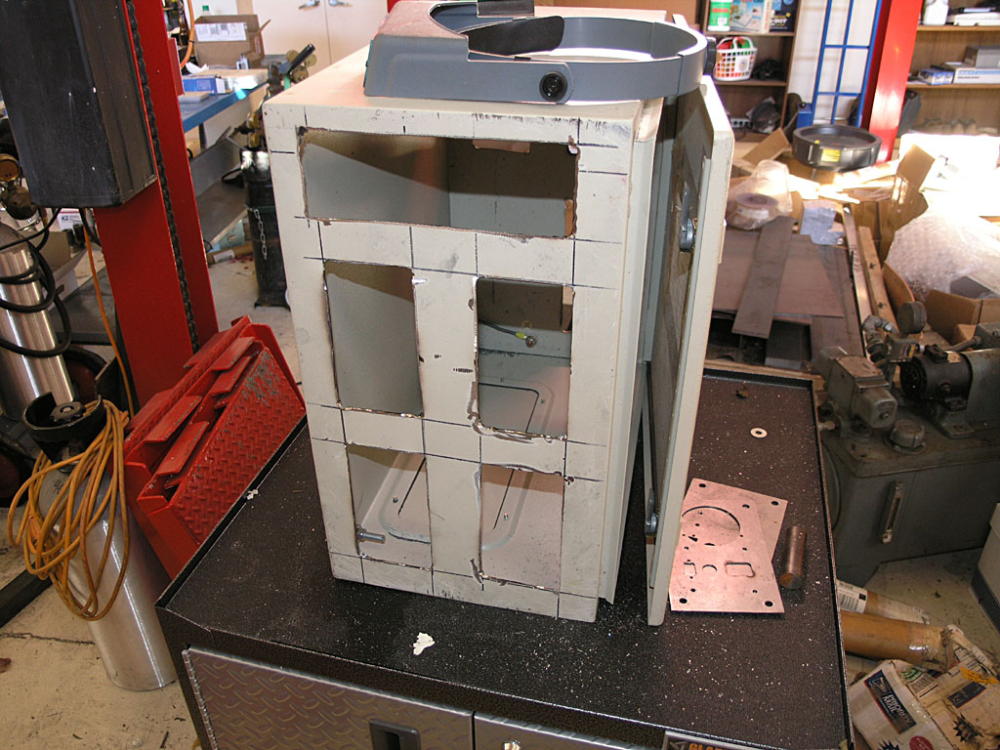
The panel inserts
cover the holes. 4 axes on front, with a master control panel at the top.
I could possibly also exhaust the fan at the right side of that control
panel...
Three rear panel
cutouts. Top 2 are for 2 more axes. Bottom will be for all the auxilliary
connectors for limits, coolant relay control, and VFD control...
I've got one pretty well mocked
up with all the parts mounted:
As you can see
I have an issue with meter clearance and the mounting bolts, so I made
an oversized hole to try to create some "wiggle room". This
happened due to an error in laying out the big square face during the
CAD design. What I need to do is relocate the whole meter 1/4" down
the panel and all would be well.
I've gotten it
close enough, I think. I can't go much further or I'll lose the mounting
holes for the meter as you can see in this behind shot. In the end, I'm
planning to remake these panels anyway once the CNC is up and running.
I'll make them out of 1/4" aluminum plate and put some engraving
and other decorative touches on so they'll look a lot nicer.
Soldered
the Cables on the Servo Motors
The servo motors come from
Homeshopcnc with just a short tail on them, so you'll need to attach a
longer cable back to you electronics cabinet. I decided to use IES-style
power cords for mine. These are the same power cables a PC uses. I chose
them becaues they're cheap, the servo only has 3 conductors like a power
cord, and they're designed to carry current. My one reservation would
be that they're not shielded, so the noise from the servos will escape.
That means I need to take care the rest of the cables, for example the
limit switch and encoder cables, are properly shielded for noise and the
shields are grounded.
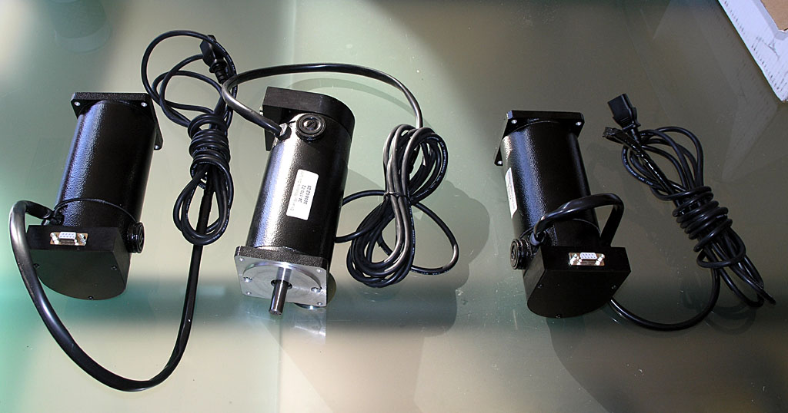
I put 10 foot
power cords from CableWholesale
on the motors...
Homeshopcnc
Servo Encoder Pinout
Got a note back from my query
to Homeshopcnc on pinout for the encoders. They say the 5 pins on the
encoder correspond to the top 5 pins on the DB connector. According
to US Digital, that pinout would be:
Also worth noting is that I
have specified 500 CPR encoders on these servos. With quadrature, that
means 2000 steps per revolution.
10/30/08
Miscellaneous
Mill Progress Updates: Timing Belts, Martian War Machine Axis Modules,
Limit Switches, and Sheet Metal Templates
Tonight was a productive evening
in the shop!
I discovered some time back
that the 72 tooth timing belts I ordered for the X and Y axes were too
small. Doh! Turns out I made a minor miscalculation in the geometry involved.
I was very concerened I would discover the timing pulleys I had ordered
were also not going to work as you can only get belts in certain sizes.
Fortunately, luck shined on me and I found that a 75 tooth belt works
fine.
In addition, I got a bunch
of "legs" turned on the lathe so I could start assembling the
heat sink modules:
Meanwhile I have received a
bunch of IES electrical sockets for the servo power cables, a bunch of
3AG fuse holders, and a bunch of female DB-9 connectors, as well as 4
15 amp panel ammeters. It's time to start thinking about the sheet metal
panels. I picked up some 22 ga stainless sheet at Orchard Supply and I
drew up a template in my CAD program:
About this time
I got thinking about the one big round hole and the two square holes.
Painful to make with my current equipment. I'll have to go buy a hole
saw for the big round hole (for my load meter), and the squares have to
be made by drilling out the corners as marked on my template and them
milling or perhaps nibbling across to connect up the holes. All in all
its a bit of a nuisance, and its got me thinking about punch and die work.
I'd need 3 punches: one for the meter hole and 1 each for the DB-9 and
IES power connector square holes. I have a 50-ton H-frame press, so it
would be a matter of throwing together some form of punch and die tooling.
Realistically, that's even more work than just making the panels the original
way I had planned, but it sure is more interesting work. Gotta think about
whether to go there or just git 'er done!
Lastly, I got
my Industrial Hobbies optical limits installed. They sure are cool. Here
are some pix:
There is the
X-axis limit. It installs in the existing 2 holes on the saddle and is
triggered by the table stops in the side T-slot. As the IH directions
suggested, you have to put a washer behind the table stops to keep them
from wiggling around...
Here is a shot
of the Y and Z-axis limits as they're being installed. These 2 use long
rods with collars. An aluminum block such as you see on the Z-axis is
bolted to the moving axis and when it contacts a collar on the shaft it
actuates the switch...
Here's a closeup
of the insides of one of these nifty switches...
10/22/08
Electronics
Enclosure Planning Sketch and Opening Key
This evening after I got done
with work I made a key to open my surplus Rittal NEMA enclosures with.
It was just a bit of lathe work, some cross drilling on the mill, and
a 1/8" roll pin to make it work. I doubt if it took more than 10-15
minutes:
The lock...
The key I made...
First look inside
the box. This should work out pretty well, I think!
Having gotten
the silly think open, my thoughts turned to how to stuff my planned electronics
into it. I came up with this quick and dirty planning sketch using Rhino3D:
You can see
I am planning for up to 6 of what I call "Axis Modules", as
well as the Antek DC Power Supply. I'll need to squeeze a few other things
in there as well, but it looks roomy enough to do so, eh?
In addition to
this planning sketch I've mapped out which other electronics cards I need
to order to provide all the functions of my CNC control enclosure. Full
details on the electronics page.
10/12/08
I'm Declaring
the One Shot Oiler Done!
Got the pump mounted and the
Z-axis plumbed. There are minor improvements I might make, but in general,
it works well!
Here is a roundup of pictures:
The pump mounted
to the column...
Shot of the
saddle circuits...
And the Z-axis
circuits...
10/11/08
Ordered a
1000 Watt DC Power Supply to Run the Servos Today
I ordered a PS-10N70 power
supply from Antek today
to power the servos on my mill. Here is a photo:
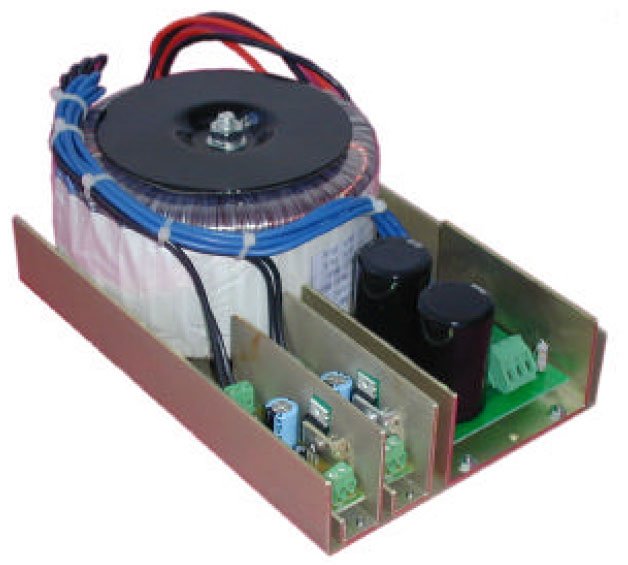
It was $150 +
$10 shipping, which seems very reasonable. This is a 70V supply, which
leaves a little margin for the 80V limit on the Geckodrives. Antek is
run by a fellow named John Ango. I've ordered toroidal transformers from
him before and he's a good guy to do business with. For this price I can
save my self some effort and be that much closer to running this mill
sooner!
Ordered Timing
Belts and Pulleys From SDP-SI and Musings About Encoders and Accuracy
The stock timing pulleys for
the IH CNC kit are HTD series (semi-circular teeth), 5mm pitch, and 15mm
wide. But, the pulleys that came with the kit have a tiny little 8mm bore
designed for the servos IH sells. As I am using HomeShopCNC servos that
have a 1/2" bore, they just won't work. There isn't enough meat on
them to bore out that much. So, I had to figure out a new plan. After
some fooling around to measure the shaft center distance on the bracket
(it doesn't adjust, so you had better get it right!), I came up with a
distance of 3.769". I plugged this into a Rhino3D drawing as a sanity
check along with pulley diameters and actually drew up the stock arrangement.
I came up with the small pulley having 12 teeth and the bigger one having
48 teeth for a 4:1 reduction ratio.
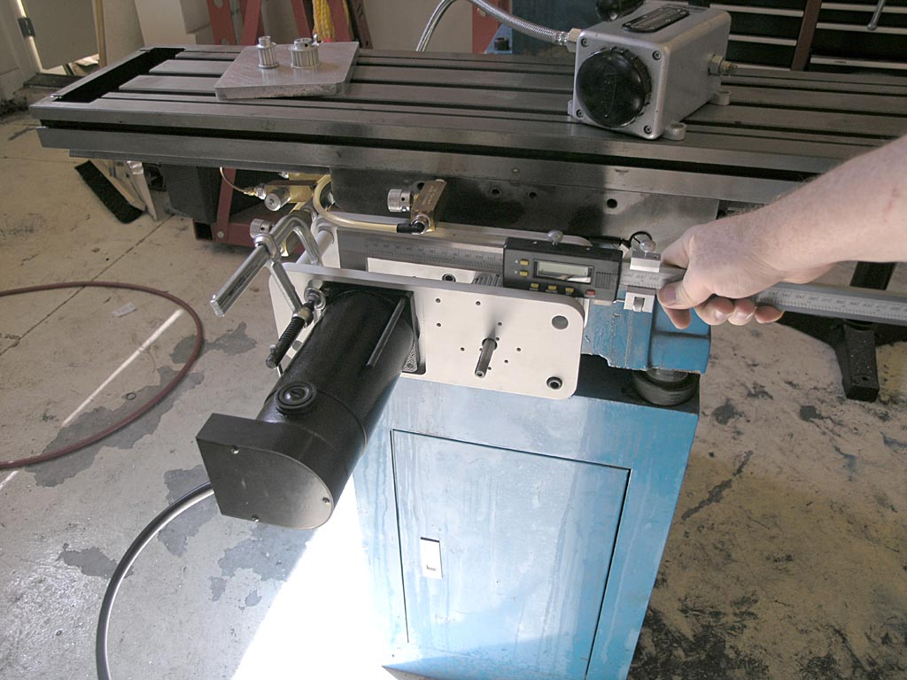
Measuring shaft
to shaft with my 850 oz in HomeShopCNC servos. I knew there was a reason
I had those big giant calipers!
Okay, so what's the closest
pulley for the motor that will fit my shaft and work with an off-the-shelf
timing belt without having to change the shaft to shaft distance or modify
the bracket? Turns out SDP-SI has a
nifty little calculator for this purpose. It didn't take too much
fooling around before I figured out that a 72 tooth belt (instead of the
stock 70 tooth belts) and a 17 tooth motor pulley would do the job. I
ordered these from SDP-SI at a total cost of about $40. Not cheap, but
the belts were half that and making 2 timing pulleys would consume a lot
of time that I could not spend elsewhere.
Note after the fact (10/30/08):
The 72 tooth belts don't fit but a 75 tooth works great with this pulley
combination.
My reduction ratio on the X
and Y axis will now be 48/17 or about 2.824:1 instead of 4:1. The stock
IH kit comes with 410 oz/in servos but I'm running 850 oz/in, so I doubt
I'll run short of torque. I'm running the 500 resolution encoders, but
they're on the motor instead of on the ballscrew like the IH kit. So,
IH gears down 4000 cpr encoders (I deduce given their 50 millionths resolution
figure, hmmm) by 4:1 getting a resolution of 4000/4 = 1000 counts per
motor revolution and 4000 counts per ballscrew resolution. Here
is a thing about this 50 millionths figure from IH: none of the likely
encoders from US
Digital come anywhere near 4000 counts per revolution. 1000 was the
highest I could find. How can they get to the 50 millionths figure then?
The answer is not so hard, we use quadrature inputs which give us 4x the
resolution for the encoder. So, if IH uses an expensive 1000 count per
revolution encoder in quadrature mode, they get 4000 counts per revolution.
Let's assume I run my 500 count
encoders in quadrature mode. I'm running the equivalent of 2000 * 2.824
= 2824 counts per ballscrew revolution and 2000 counts per motor revolution.
So I appear to have about 70% of the resolution of the IH kit. Instead
of 50 millionths, I'll be at 0.7 of a tenth. That's still pretty good!
And note that this is actual resolution an encoder can see and a servo
drive can do something about.
Steppers, by comparison, are
commanded to move a step and have to just assume the proper motion occured.
For comparison, let's
look at the Tormach, which uses stepper motors instead of servos. I'm
not claiming one mill is more accurate than the other, I'm just taking
a look at how the numbers work out.
Tormach claims resolution of
a tenth. That is defined as, "The minimum discrete position move
is 0.0001", this is the resolution of motion."
What can this mean if we investigate
closely? Given their definition, it means that 0.0001" corresponds
to one step on their stepper motor. A typical stepper has 200 steps in
a rotation, so that implies the gear train from step to table motion is
1.000" / (200 * 0.0001") = 50:1. That's a very big reduction,
in fact it sounds too big. The IH reduction is 4:1 via pulleys and another
5:1 via the ballscrew, or 20:1
Tormach says their rapids speed
is 65 ipm. Let's plug these numbers backwards and see what we get:
65 inches / 0.0001" =
650,000 ten thousandths = 650,000 steps per minute
650,000 steps per minute /
200 steps per revolution = 3250 rpm
Maybe they can rapid the machine
while running the stepper motors at 3250 rpm, but that seems really fast
for a stepper motor. Most of them in this kind of size range have a torque
peak much lower than that. Tormach's
Design Analysis talks about torque falling off rapidly in just a few
hundred rpm. My assumption would be that the 0.0001" resolution is
not realizable in practice and is based on something such as microstepping
(the Tordrive has 10x microstepping, for example which would mean divide
everything by 10 if we're talking microsteps). If I am right about the
microstepping, the real resolution is more like 0.001", which is
fine, and completely in keeping with the mill's stated performance.
Why doesn't microstepping count?
Because you can't maintain full torque on a microstep unless it corresponds
to a full step. They're largely about smoother acceleration and motion
more than they are about accuracy.
I like the Tormach mill, BTW,
I was just curious to work through the figures and see what I could learn.
Update on Tormach
I confirmed a few things from
some
Tormach owners on CNCZone. The Tormach direct drives the ballscrews
with no reduction, and the lead on the ballscrews is the same as IH: 5
turns to the inch. So, at full rapids, the Tormach is doing 325 rpm as
suspected. And also as suspected, you have to assume 10x microstepping
to get to the 50 millionths resolution. My understanding was that you
shouldn't count on microsteps for increased resolution because the torque
was very low. That turns out to have been wrong. There is a
great series of posts by Mariss F. on CNCZone that lay it all out.
The long and the short of it is that you can take advantage of up to 10x
microstepping and still have about 70% of the torque and full positional
accuracy. Therefore Tormachs 50 millionths resolution claim is quite defensible.
Now of course there are other
issues that prevent the machine from being that accurate in general, but
Tormach only claims about 0.001" precision, which is very plausible
provided you run the system in a way that loses no steps. A servo system
still have the potential to be more accurate because it can get back on
track after the fact. Whether that's acceptible or not to your application
is a whole other question I won't delve into here.
It was gratifying to see that
my math all worked out properly with the real data on the Tormach that
I didn't have access to!
Getting Closer:
Mill Column Installed
With the help of my brother
and an engine hoist, we got the column up onto the base. This thing weighs
275 lbs before you put epoxy granite in it!
Starting to
look like a mill now!
9/23/08
Cruel Teaser
Sketch
Just the one "spy"
photo of a little something I'm designing:
Curious how
thee are two different kinds of tool holders, eh?
Too premature
to say more!
State of
the Union: One Shot Works for X-Y and X and Y are "On the Bracket"l
There's been quite a lot of
progress I've been slow to report on, so this is a catchup post in pictures
in no particular order:
X-Axis is assembled
and "on-bracket"...
One
shot oiler for the X and Y axes is now up and running well. Between
the way lapping and the one shot, I can tight the gibs as tightly as they
can go with a screwdrivers and the axes still move like velvety smooth
butter...
X-Axis is "On-Bracket"...
Here's Where
We Stand: One Shot Works Great on X-Y. Ballscrews and Brackets are Mounted
on X-Y
Next Step: Mount
the Column. I made a change from IH's directions. If you mount the column
and then try to install the ballscrew, it is hard to access the top of
the column without a ladder unless your machine is on the floor. So I
mounted everything temporarily and then disassembled it. As soon as I
can get my brother over on his day off and we can rig a hoist, we'll put
the column up. The holes for the mounting the ballscrew and servo are
all drilled and tapped, so it should be fast. After that, I need to:
- Plumb the Z-axis
oiling--note that there is a plugged outlet on the other side of the one
shot pump for that
- Make a mounting
plate for the One Shot Pump that goes in the opening for the hand crank
on the Z-axis. It'll do double duty blocking off that opening and mounting
the pump.
- Mount the servo
motors. My NEMA34 frame motors fit the IH brackets just fine (yay!). I
need to look at what's required to mount the timing pulleys to these servos,
however. I also need to get a set of belts from IH.
- Mount the optical
limit switches on all 3 axes.
- At this point
I'll be mechanically complete on the conversion and it'll be time to start
looking into the electronics.
Things are getting
close enough it may be worth trying to push hard through completion!
9/02/08
Sears Labor
Day Sale Yields CNC Cabinet For the Mill
I've ordered a Sears Gladiator
Modular GearBox:
Inside is a cabinet
with 1 shelf on slides. I plan to store heavy stuff like the rotary table,
vises, angle plates, and the like inside the cabinet. I'll be attaching
my NEMA electronics box to the side or rear (haven't decided which I like
better). The PC and all the mill's electronics will go inside that NEMA
box. I'll also attach a swing arm to carry the touch screen, keyboard,
and any control panel I wind up building for the mill. I have a spot in
the shop right adjacent to where the mill sits that is perfect for this
little rolling cabinet. Should make for a very neat and professional installation.
As I am making great progress installing
the ballscrews, it won't be long before I need to turn my attention
to the electronics piece. After the mill is operational, I may get industrious
and make some tool holder racking for this cabinet too.
8/30/08
More Y-Axis
Work: Oil Passage for Ballnut and Casting Relief for Extra Travel
To deliver oil to the cup atop
the ballnut mount, I simply connected the oiling groove to the cup using
a cold chisel and some gentle tapping. I only had to go about 1/8",
so it wasn't hard to do.
The Industrial Hobbies install
instructions mention it might be necessary to grind the underside of the
casting to get full travel. They are right--there is a travel obstruction.
Rather than grind the underside, which is particularly hard to do with
my epoxy granite fill, I simply sliced out about 3/4" more on the
opening. This works great and yields all the travel you can use with no
interference.
8/24/08
Finished
Up the New Y-Ballnut Mount
Here it is:
The ltitle center
hole drops oil onto the ballscrew through a hole in the way above...
Just in Time to
Start Installing the Kit: We're "On Bracket" for the Y-Axis!
Very spiffy
looking, eh?
FWIW, I took down
the measurements of all 3 ballscrews. They 0.2" per revolution, 0.75"
diameter, and the lengths are:
X-Axis: 44"
Y-Axis: 28":
Z-Axis: 36"
8/17/08
Building
a New Y-Ballnut Mount
Made rapid progress in a short
time on this Y-Ballnut Mount:
The factory
mount hangs off the edge and you lose 2 bolts. My new mount has all 4
bolts to hold down the ballnut...
Just finished
threading it and it fits!
8/14/08
Finished
Tapping and Cross Drilling the Oil Passages for the One Shot
Just back from vaca and had
a couple of hours in the shop, so I did the X-axis today.
8/2/08
Tapping and
Cross Drilling the Oil Passages for the One Shot
Full details on
the web page. Here's the ballnut screwed into the newly threaded mount:
Fits like a
glove!
7/20/08
Finished
Epoxy Granite Filling Around the Column Bolt Pipe on My IH Mill
Just to make sure
I was revved up to go to work on the mill this morning I watched a bunch
of CNC
videos on CNCZone. Then I went down, donned my nitrile gloves, and
got back to making my epoxy granite mud pies:
Filling the
cavity through the narrow slot was easiest with a cheap ice cream scoop
I bought at the hardware store for $4...
I filled up
to about 1/2" from the top of the pipe, and then I switched to a
pure sand mixture to make sure the top was free of rock edges sticking
up...
7/5/08
Preparing
for the Column Pour
Since getting
a new job in May I've been tied up for over a month before I could get
back to my CNC work. I also had to finish up my little steam engine team
build. I was able to carve out a little time over this Fourth of July
three day weekend to make slight progress. I've basically epoxied a base
plate into the bottom of the column along with a pipe that provides a
bore for the big column bolt to go through:
The surface tension
works nicely to let me apply a fair amount of epoxy. I just want enough
to hold the pipe solidly so that when I flip the column over start adding
the E/G mixture from above it won't break loose. I'll let this cure all
week and then hopefully tackle the column fill next weekend. I've decided
not to fill the column all the way up. This arrangement will fill the
bottom 10" or so and should add considerable dampening without in
any way being a clearance problem. I would think this will really help
the mill to perform better to have this much added dampening mass in the
critical junction between the base and the column. More would be better,
but I'm anxious to get on with the rest of the CNC conversion and there
is a lot of work to do!
Bought a
Set of Servos and Gecko Drives from HomeShopCNC
After reading
a note sent to me by Peter
Tsukamoto, I got inspired to take a step of some kind on the mill
to move this conversion forward. Peter started with a Unimat lathe 30
years ago and today he owns a full machine shop in Hawaii. Guys like that
are always an inspiration to me, so I try to listen carefully when they
have some advice for me. In Peter's words:
See if you can
get your CNC mill going as a priority. It will open up new vistas in a
way you cannot believe. It will accelerate any project you work on. Make
them way more enjoyable too.
He makes a lot
of sense there. Every time I perform a manual machining operation on my
lathe or mill I think about what the CNC equivalent would be. In almost
every case I could do the job much faster, more easily, and often better
with CNC. There's a reason it took the industry by storm years ago!
A couple things
have been holding up my progress. First, I've been spending a ton of time
lately on a Steam Engine Team Build that
has involved creating some tooling and a number of other things. The other
problem that was distressing me was that I had misplaced the Industrial
Hobbies CNC conversion kit somewhere in my house. I'd been looking
for it off and on for days, and the number of places it could be was dwindling.
After spending 45 minutes in the garage shifting things around and checking
every last possible hiding place underneath all the junk, real panic set
in. Paraphrasing Conan Doyle's Sherlock Holmes, when you've eliminated
all the possibles, you have to start considering the impossibles. Eventually
I discovered that my kids had pressed the two boxes into service to create
a stand for their Karaoke machine. They were hidden underneath a black
table cloth to make it even harder. I heaved a mighty sigh of relief after
making that discovery!
So, having located
the components, I decided to take another step and ordered up a set of
servos and drives from HomeShopCNC.
I also looked at Keling as another
source. HomeShopCNC was just slightly cheaper on Gecko drives, and I liked
the nifty anodized housings for the encoders:
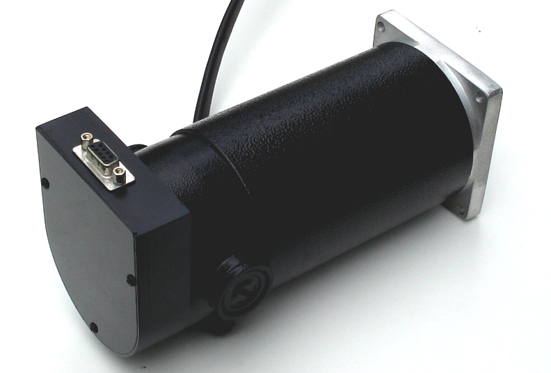
I like the nifty
anodized housing for the encoder...
These are 850
oz in servos, and Keling had a bigger model at a whopping 1125 oz in.
Why not just buy the bigger-is-better plan? Well, because there are trade
offs. It's worth noting that the standard IH CNC kit comes with 410 oz
in on the X/Y axes and 648 on the Z--that mill head is heavy! Their heavy
duty kit looks to me like is substitutes the bigger Z servo on the X/Y
axes. Either way, I should be fine with 850 oz in. Now here is the rub.
The big Kelling 1125 oz in servo peaks out at 3200 rpm whereas the 850's
I got are spec'd for 4200 rpm. I don't know if I'll ever get to use the
extra rpm to increase my rapids or not, but bigger servos are often slower
and the same is true of stepper motors. I think these 850's will be a
decent compromise and they'll give me some room to experiment on my feeds
and speeds. If the Z gives me any trouble I figure I can build a counterweighting
system with some gas springs and radically reduce the force needed there
too.
While I'm talking
about alternatives, I should mention that I did some serious looking around
for an alternative to the Gecko drives. Why? Customer Service. That's
got to come as a surprise because Gecko has some of the best customer
service reputation in the industry. The trouble is, I ran afoul of one
of the counter examples of that. My GRex for my CNC
lathe project has been a disaster. The good news: it was very easy
to get it working, and I like the idea of not relying on the parallel
port. In theory, it could save me a lot of trouble, especially since I
had envisioned a fancy control panel for it. The reality? The device has
never lived up to its original promises. It has had teething troubles
since the beginning, and most of it has never gotten fixed. There are
problems with 3D profiling on the mill that make it a questionable solution
there, and the device doesn't support spindle indexing on the lathe, which
is a requirement for threading. What good is a lathe that can't thread?
Many promises were made over time about this being fixed, and we're talking
a span of years. Unfortunately, it has never panned out. Gecko blames
it on the firmware and says it isn't their fault. I think that's silly,
and it certainly was not the story at the outset. I sent Mariss a note
offering to trade my perfectly good GRex for a set of 3 of his cheapest
servo drives (which combined were less than the GRex cost), and explained
my problem with the GRex. I never even got a response back from Gecko.
That's just not good customer service in my book, despite their stellar
reputation.
So how did I wind
up buying another set of Gecko drives anyway? Here's the rub--who else
is there? Rutex is in an odd state. The parent is Australian, and the
designer has gone missing there last I heard. Reports vary on whether
the boards can be gotten here though the US distributor says yes. Last
thing I want to deal with is another strange situation with one of these
boards though the Rutex has a lot of advantages over the Geckos on paper,
and there are certainly those who swear by them. I also looked at the
UHU
family of servo drives. These look to be excellent, but so far they
are either awfully expensive if you buy one already built, or you deal
with cobbling together a kit. Frankly, I was tempted to go the kit route
anyway, just to avoid Gecko. I enjoy building electronics and I'm pretty
good at it. The trouble is, Peter's words kept nagging at me. How much
would it set back my conversion to have to build and debug 3 servo controller
boards? So I got the Geckos. They were cheap when bought with the servos
anyway.
Still, it wouldn't
have taken much to get me to buy something from someone else. I guess
that's the power of customer service. Given his reputation, I can't understand
why Mariss wouldn't do something for me. Oh well, I sure hope these new
drivers are flawless or I will build the UHU boards.
I'm going to update
my To Do list for the mill to a finer
level of detail, finish that Team Build, and then try to see how much
progress I can make on the mill conversion.
4/6/08
Bought a
Toroidal Transformer for the Servo Power Supply Today
I plan to build
a DC power supply similar to the one I did for my lathe to run the servos.
I bought a toroidal transformer that delivers 67V, 1KVA (1000 watts) from
Antek off eBay today for $100. It's a good price and I've dealt with Antek
in the past. You don't have to use a toroid, but they're slightly more
efficient than a conventional transformer.
When I get done
working on the steam engine parts for my team
build, the mill will be free again and I plan to start building the
electronics, so I wanted to be sure to have the parts on hand if they
became available cheaply.
3/4/08
Epoxy Granite
Mud Pie Test Was Successful
Here's what we
got the next morning:
Test was successful!
The test was successful.
The aggregate is embeded in the epoxy. The slug took a very accurate impression
from the cup--you can even see scratches made in the plastic by the gravel's
sharp edges are faitfully reproduced. I suspect creating a precision surface
in this material is easy if you have a precision mold. The material released
easily from the plastic cup--just a couple sharp raps on workbench and
it dropped right out. The ugly parts are at the air-epoxy interface from
the top of cup. There are various approaches to eliminating the air bubbles,
but it doesn't seem like there were many bubbles trapped in the material
from the mixing process--they're all at the top. A quick pass with a heat
gun is rumored to be the quick trick to get rid of those.
At this point,
I can't see much point in monkeying with success. It may be that a 10%
epoxy formula would be better, but this will work just fine for this project.
I plan to keep Epoxy Granite in mind for other projects. I understand
it sets up with an accuracy of 0.001" on top if you get rid of bubbles,
so you could make a surface plate from it.
3/3/08
Making Epoxy
Granite Mud Pies
I put together a trial batch
of E/G after experimenting with various sand and gravel mixture ratios.
It's a mud pie:
The mixture I arrived at wound
up using these proportions by weight with epoxy resin:
62% gravel
23% sand
14% epoxy resin
That worked out pretty darned
well if I do say so myself as I was shooting for a little under 15% epoxy
resin by weight. In terms of volumes, this was 1/8+1/4+1/3 cup of gravel,
1/4 cup of sand, and 1 1/2 pumps each of resin and hardener. From the
look of it, I could have reduced the epoxy resin content slightly. At
one point it seemed to dry, but as I kept stirring and getting all the
aggregate coated it turned liquid again and life was good. We'll see how
it turns out tomorrow after it has cured overnight. If the test is successful,
this is going to be a remarkably easy thing to do!
3/1/08
Started Working
on the Epoxy Granite Fill for the Base
I'm going to fill the base
with Epoxy Granite to increase dyname stiffness. Check the Epoxy Fill
Page for full details, but here is the containment system:
Sheet metal
and steel tubes will keep the epoxy confined to where it belongs without
gumming everything else up!
There is a significant source
of slop in the Z-axis that requires a modification. This is the bracket
that attaches the Z-axis slide to the leadscrew. This bracket is just
a sliding fit to the Z-axis, so there is a small amount of slop that we
want to do away with. The modification is described on the Industrial
Hobbies web site, and can be done to almost any RF-45 mill. It involves
creating a new bushing that has a shoulder on it so that you can bolt
it down and squeeze the Z-axis saddle between the shoulder and the leadscrew
bracket.
You can check out my progress
with this Z-axis mod as well as adapting the bracket for the ballscrew
on my Z-axis mod page.
Here is the
boring head gearing up to cut that shoulder...
Lapping Finished!
I completed the lapping of
all ways yesterday. The hardest part is wrestling the heavy components
around. I did the Y-Axis by myself, but talked my brother into being on
hand for the table and column. As we finished each axis, I thoroughly
cleaned the axis with kerosene, applied generous way lube, adjusted the
gibs until as tight as I could get smooth motion by hand and then checked
out the feel of the axis. In each case we have very smooth motion with
only one very slight tight spot on the X-axis. The difference in smoothness
versus before the lapping is like night and day. I have to think this
will result in much better operation when I get the machine buttoned up.
Here are the two remaining
axes shortly after we completed the work:
2/18/08
Y-Axis is
Lapped!
I completed the lapping on
the Y-axis today. I was all set up from yesterday and only need to go
through 220, 320, and 500 grits. All told it took about 40 minutes. Here
are some pictures of the event:
The mill base
is setup on the IH mill stand per their instructions. The lift table (some
call it a die table) on the right is essential when moving heavy stuff
around the shop. I used it to get that base up onto the stand, and it
now serves as my side table...
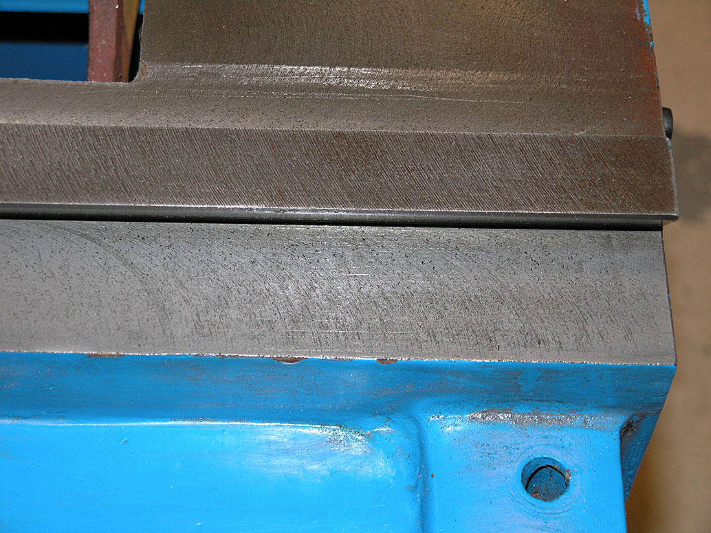
Here are the
ways after the first two grits: 80 and 120. Cutter marks are still very
visible from the manufacturing process. We're lapping in order to tone
them down so the ways have less friction...
We apply kerosene
to the ways and then a pinch or two of grit. Then the saddle is placed
on the ways and stroked back and forth the requisite number of times allowing
for at least 50% overhang at each end of travel...
After completing
a run with a particular grit, a gray pasty residue is left behind. It
consists of grit and ground off way material (cast iron). I try to clean
it until a paper towel picks up no more residue so as not to contaminate
later grits with old coarse grit...
A little closer
look at the paste. Note we're not getting right up against the dovetail
too well. That's beacuse this is still the 220 and I've only started to
put the gib in at this point. That was again per IH instructions...
And here is
where we got to after the final grit. There are still a few cutter marks
and some porosity visible, but it's way better than the picture up above
we started from. That's what we're looking for!
And, as IH says,
we aren't going to try to eliminate every last tool mark. To do so is
to invite going too far and possibly compromising the trueness of the
way. This is an adequate compromise. What I think will really help is
tying these new smoother ways with my one shot oiler, which will ensure
much more consistent lubing than I've had in the past.
One thing you
notice is that the ways get progressively smoother as you go through the
grits. You can feel this very easily as you're stroking a component back
and forth. It is particularly obvious when you insert the gib, run for
a bit at 220 grit with the gib loose, and then are finally able to tighten
the gib and still get smooth motion. I doubt very much I could've moved
the saddle with the gib in and tightened and nothing but kerosene as a
lubricant before I started this process!
2/17/08
The process of conversion began
today. My second IH mill has been sitting on the shelf for a little over
one year, and I decided to finally get going on the conversion work. Fortunately,
the mill was disassembled before being put away for storage. Equally fortunately,
I applied a treatment of Break-Free rust inhibitor to all the bare metal
surfaces, so there was no rust to speak of visible anywhere.
Why Lap and is it Dangerous
for Machine Accuracy?
The first step in the process
is lapping the ways. I'm starting here because my next stops will be installing
a one shot oiling system and filling some of the castings with epoxy granite
to help dampen and stiffen them. I don't want the one shot oil passages
to get grit in them, so I need to finish lapping before I begin that task.
Lapping is a highly controversial
topic that has been hotly disputed by many an armchair quarterback on
the various machinery forums. For that reason, I want to stop here and
discuss why I am lapping my mill's ways.
First and foremost, I am doing
it because after considered discussion with Aaron Moss (the original owner
of Industrial Hobbies and likely the world's foremost expert on these
mills) I am following his advice. Aaron has lapped many a Chinese mill
and swears it is always an improvement. The reasons are twofold. There
is a reduction in friction of the ways which helps to reduce stick slip
and makes the motions smoother. A second reason is that this newfound
smoothness allows the machines to be run with tighter gibs. The upshot
is a more accurate and tighter machine. Whatever we may sacrifice in the
ultimate trueness of the ways is more than made up for by smoother motion
and tighter gibs. I trust Aaron totally on this, and he has the experience
to back it up.
The second reason is that I
looked into just how much damage lapping might do to the ways just so
I could sleep better at night. The difficulty that this discussion always
raises is that lapping will by its nature reduce the accuracy of the ways,
making them rounded rather than true.
I did some Internet research
in an effort to quantify how much material the lapping process may be
removing, and thereby how much inaccuracy might be induced by the process.
One source indicates
that a typical lapping procedure will remove 0.0002" - 0.0005" of material.
Another
article found that the mean rate of material removal using diamond
cutting compound (much more aggressive than the simple aluminum oxide
that Aaron Moss recommends for lapping ways) was 0.0004 mm/minute = 0.000029"/minute.
Note that these two references involved use of lapping machines and near
optimal conditions for maximum material removal.
Let's briefly consider the
schedule lapping suggested by Industrial Hobbies:
Grit
Strokes
80
20 - 30
120
40 - 50
220
40 - 50
320
40 - 50
500
40 - 50
In comparing this schedule
to the published material removal rates, let's assume lapping can proceed
at the equivalent of 1 stroke per 2 seconds. In essence, we are then talking
about 230 strokes being the equivalent of less than 10 minutes of lapping
on a machine. Since the grits are made progressively finer, it is probably
more equivalent to half that on average, but even if we went at it for
a full 1 hour the material removed would be 0.0017" in the absolute worst
case. At 10 minutes, we're looking at about 3 tenths. My suspicion is
that it is more likely way less than half or even a quarter as much since
this approach to lapping is not going to produce optimal material removal
rates. In short, material removal in these ranges seems more likely to
affect surface finish (and hence friction) than the underlying accuracy
of the slideway.
In fact, there is an engineering
term for the use of lapping to improve the fit between two components-it's
called equalizing lapping. To further cement the case that this is what
we're doing when lapping the ways, one uses a hard lap to avoid embedding
of the grits in this type of work. Lapping to change the shape of something
is called form lapping. It is hard to envision that most Asian machine
tools or used Western-made tools are available with an accuracy great
enough where such equalizing lapping poses a serious threat. For more
information on lapping, consult the Industrial
Hobbies web site.
And by all means, follow your
own conscience on the matter of whether to lap your ways or leave them
alone on an RF-45 mill. Importantly, the latest model IH mills have the
ways more carefully ground, so there is no longer a need for lapping on
these mills.
The Process
I followed the lapping directions
on the Industrial Hobbies web site to the letter. Tonight I began with
the Y-axis. I was able to go through the first two grits, 80 and 120,
in about 1 hour. This included initial setup, dragging the mill parts
out of storage, setting them up on a table, and the actual lapping itself.
The work itself is extremely
simple. I irrigate the ways with kerosene to act as a lubricant. Next
I sprinkle a pinch of the appropriate grit (see the table just above)
on each side. Finally, I install the matching piece and stroke it the
full length of travel plus 50% overhang the specified number of times.
I try to do this smoothly and steadily while keeping the ways in contact
on the side without the gib. Initially, we're told to go without the gib
and to lap it separately. When I get to 220 grit, it will be time to install
the gibs and go from there.
At the conclusion of these
two grits, the ways were noticeably smoother. They'd had some ridges not
unlike a file when I began and these were all but gone after the first
two grits. So far so good!